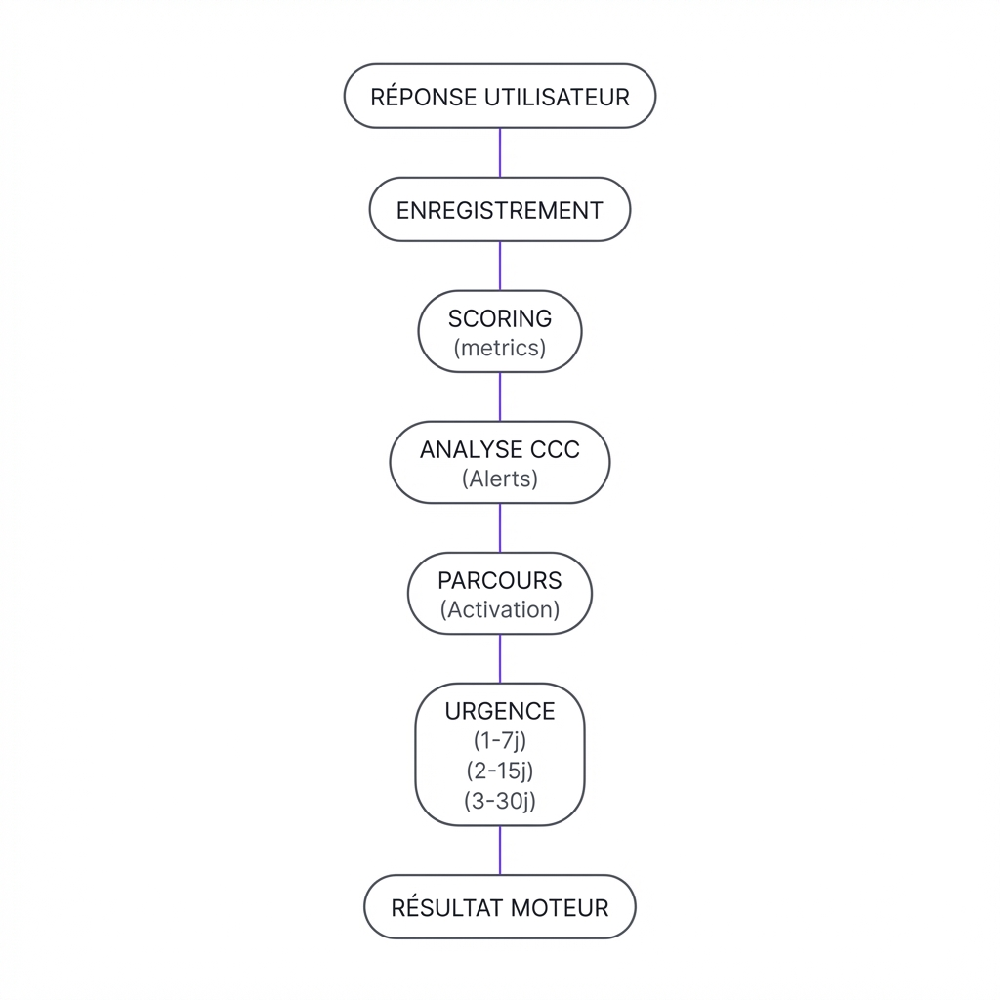
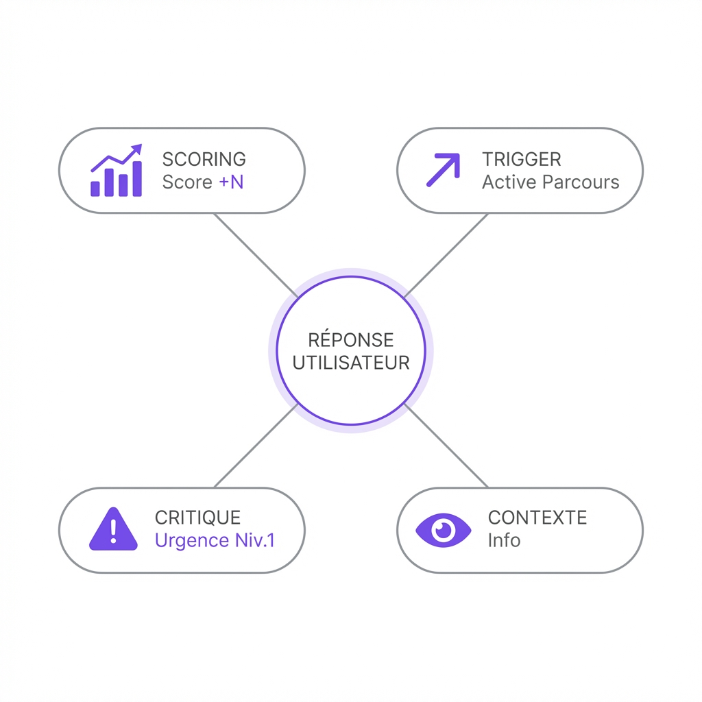
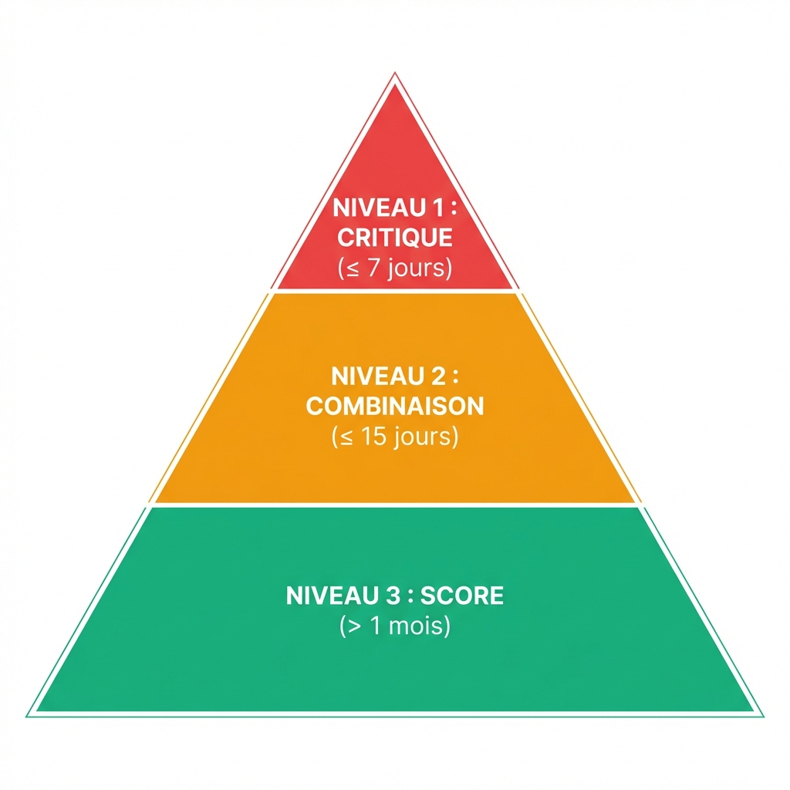

📚 Monka — Figures & Tableaux de Référence

Figure 1.1 : Flux séquentiel de traitement du Moteur Clinique (Protocole Nanobanana V2)
Tableau 1 : Objet du livrable
| Composant |
Description |
| Moteur de règles |
Logique de scoring, déclenchement, priorités |
| Structure de données |
Questions typées, recommandations, micro-tâches |
| Prototype HTML |
Démonstration fonctionnelle du moteur |
Tableau 2.1 : Documents Haute Priorité (Règles Métier)
| Fichier exact |
Contenu |
| Legacy scoring 310127.docx |
Règles de scoring, questions scorantes, formules de normalisation sur 20 |
| Legacy questionnaire 290127.docx |
Typologie des questions : scorante / déclenchante / critique / descriptive |
| Legacy Priorisation 300127.docx |
3 niveaux de gravité avec délais d'action (7j / 15j / 1mois+) |
| Legacy typologie des micro taches 030226.docx |
5 types : INFO, ORGA, STRUC, SEC, MED — règle R-MT-ASR-01 |
Tableau 2.2 : Documents Référentiels
| Fichier exact |
Contenu |
| Legacy ASR Referent op. 030226.docx |
24 ASR (1 par micro-parcours), signatures d'état |
| Legacy Micro parcours 030226.docx |
24 micro-parcours (R1-R4, F1-F6, S1-S4, M1-M6, A1-A4) |
| Legacy moteur applicatif et sécurité médicale 020326.docx |
22 règles de sécurité médicale, alertes |
| Legacy Arborescence Globale 030226.docx |
Architecture des 5 vulnérabilités |
Tableau 3.3 : Interprétation du Scoring
| Score /20 |
Couleur |
Interprétation |
| 0 – 6 |
🟢 Vert |
Situation préservée |
| 7 – 12 |
🟠 Orange |
Vigilance requise |
| 13 – 20 |
🔴 Rouge |
Vulnérabilité élevée |
Tableau 4.1 : Typologie des Questions
| Type |
Effet Moteur |
| Scorante |
Incrémente le score de vulnérabilité |
| Déclenchante (trigger) |
Active un micro-parcours spécifique si option sélectionnée |
| Critique |
Force priorité niveau 1 (≤7 jours) si option critique sélectionnée |
| Descriptive |
Contexte uniquement, pas d'effet algorithmique |
Tableau 5 : Micro-Parcours
| V |
Préfixe |
Parcours |
Thème |
| V1 |
R |
R1, R2, R3, R4 |
Social & Relationnel |
| V2 |
F |
F1 → F6 |
Fragilité du Proche |
| V3 |
S |
S1, S2, S3, S4 |
Santé de l'Aidant |
| V4 |
M |
M1 → M6 |
Parcours Médical |
| V5 |
A |
A1, A2, A3, A4 |
Administratif |
Tableau 6 : Micro-Tâches
| Type |
Description |
Contribue ASR |
| INFO |
Information, explication |
❌ |
| ORGA |
Organisation, planification |
❌ |
| STRUC |
Mise en place structurante |
✅ |
| SEC |
Sécurisation |
✅ |
| MED |
Prescription médicale |
✅ |
Tableau 7 : États ASR
| État |
Signification |
| ❌ Non atteinte |
Aucune signature valide |
| ✔ Atteinte |
≥ 1 signature détectée |
| ⚠ Non confirmée |
Atteinte mais non reconfirmée au suivi |
Tableau 8 : Priorisation
| Niveau |
Déclencheur |
Délai |
| 1 |
Question critique directe |
≤ 7 jours |
| 2 |
CCC activée |
≤ 15 jours |
| 3 |
Score seul |
> 1 mois |
Option A : Iframe / WebView
| Aspect |
Détail |
| Principe |
Intégration fichier HTML direct (client-side) |
| Avantages |
Déploiement immédiat, zéro dev |
| Limites |
Pas d'accès backend, styling isolé |
Option B : Module JS
| Aspect |
Détail |
| Principe |
Import module ES6 dans codebase React/Vue |
| Avantages |
Accès data, styling unifié |
| Limites |
Intervention dev requise |
Option C : Import Data (Custom)
| Aspect |
Détail |
| Principe |
Export JSON/SQL -> Réimplémentation totale |
| Avantages |
Contrôle total architecture |
| Limites |
Développement lourd, risque divergence |

Figure 3.1 : Le "Quadrant Logique" — Visualisation de l'effet parallèle d'une réponse (Score,
Trigger, Critique, Contexte).

Figure 3.2 : La "Pyramide d'Urgence" — Hiérarchisation visuelle des niveaux d'action (1 à 3).